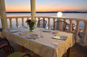

Ресторан Старгород
{kind=link}
Элегантный ресторан "Старгород" входит в комплекс престижного отеля "Рейкарц Ривер Николаев" (сеть Reikartz Hotels). Расположен на набережной, рядом с Яхт-клубом. Изюминкой ресторана стала просторная летняя терраса, с которой открывается прекрасный вид на реку.
Ресторан "Старгород" предлагает широкий выбор изысканных блюд французской, итальянской, кавказской и японской кухни. Фирменные блюда: медальоны из телятины с картофельным кремом и овощной сальсой, паровой лосось с кускусом и новозеландскими мидиями.
Современный пляж с бассейнами, бунгало и концертной площадкой, живая музыка по вечерам.
Паб Хмельной Патрик
{kind=link}
Классический ирландский паб "Хмельной Патрик" расположен на первом этаже отеля "Reikartz Ривер Николаев". Из окон открывается прекрасный вид на Николаевский яхт-клуб и реку Южный Буг.
Паб расположен на двух уровнях. В 6 залах могут одновременно разместиться до 150 гостей. На первом этаже - большая барная стойка, настольный футбол и другие развлечения. На втором этаже - залы с более спокойной обстановкой. Интерьеры декорированы забавными картинками и старинными бытовыми мелочами.
Четыре сорта живого пива (Pilsner, Bruin, Blonde, Ruby), произведенного на собственной мини-пивоварне. Все закуски готовятся в пабе: от домашних чипсов и сухариков к пиву до пиццы, бургеров и таких полноценных горячих блюд как "медальоны с овощной сальсой".
Загородный комплекс Балдино
{kind=link}
Загородный ресторанно-развлекательный комплекс "Балдино" (Baldino) расположен на выезде из Николаева в сторону Одессы. Комплекс находится в популярной зоне отдыха "Родники" на берегу Южного Буга, где еще в 1960-е годы открылся ресторан "Родник".
Ресторан "Балдино" предоставляет постетителям высокий уровень сервиса и широкие возможности для отдыха. Здесь есть банкетный зал на 150 персон, лаунж-бар на 40 персон, крытые террасы на двух уровнях с видом на реку, летняя площадка с отдельным баром, бассейн с гидромассажем и шезлонгами, детская площадка, мини-гольф, современный теннисный корт с комфортабельными раздевалками и душевой. Эксклюзивный дизайн интерьеров.
Клуб Ushuaia
{kind=link}
Клуб уникален своим эксклюзивным интерьером, насыщенным яркими красками. По периметру комплекса растут пальмы, что дает впечатление, что вы находитесь в неповторимом тропическом месте.
В Ушуайя самый большой танцпол в городе, который работает не только по выходным, но и в будние. Вы встретите самых ярких звезд и диджеев как с Украины, так и с мировым именем! В нашем клубе вы сможете увидеть звезд европейского и мирового масштаба. Для вас – музыка лучших диджеев, выступления звезд и самые яркие шоу!